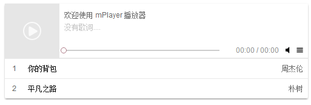

最近在做播放器的时候遇到的一个小坑坑。。。
在PC上用mousedown等事件来实现进度条的拖动，在PC上是一切OK的，放到手机上一切都失效了
经过查阅才知道是手机上没有mouse事件，全部换成了touch事件，代码做了一些改动

//拖动进度条
function initDragProgress() {
var params = {};
var dot = _this.mPlayer.querySelector('.mp-main-control-progresss-thumb');
var parent = _this.mPlayer.querySelector('.mp-main-control-progresss');
var played = _this.mPlayer.querySelector('.mp-main-control-progresss-played');
function down() {
if (playId >= 0) {
_this.stop();
//兼容触摸屏
var touch = event;
if (event.touches) {
touch = event.touches[0];
}
params.flag = true;
params.parentWith = parent.offsetWidth;
params.played = played.style.width;
params.startX = touch.clientX;
}
}
function move() {
if (params.flag) {
var touch;
if (event.touches) {
touch = event.touches[0];
document.addEventListener("touchmove", function () {
touch.preventDefault();
}, false);
} else {
touch = event;
if (touch.preventDefault) {
touch.preventDefault();
} else {
touch.returnValue = false;
}
}
var moveLength = touch.clientX - params.startX;
//根据音乐时长与实际px的比例计算跳过的时间
var moveB = _this.player.duration / params.parentWith * (moveLength) / _this.player.duration * 100;
var calc = parseInt(params.played) + moveB;
if (calc <= 0) {
calc = 0;
}
if (calc >= 100) {
calc = 100;
}
played.style.width = parseInt(calc) + "%";
}
}
function up() {
if (params.flag) {
var stopTime = _this.player.duration * parseInt(played.style.width) * 0.01;
if (stopTime <= 0) {
_this.player.currentTime = 0;
} else if (stopTime >= _this.player.duration) {
stopTime = _this.player.duration - 1;
}
_this.player.currentTime = stopTime;
_this.play();
params.flag = false;
}
}
if (window.attachEvent) {
dot.attachEvent('onmousedown', down);
document.attachEvent("onmousemove", move);
document.attachEvent("onmouseup", up);
} else if (window.addEventListener) {
dot.addEventListener('mousedown', down, false);
document.addEventListener("mousemove", move, false);
document.addEventListener("mouseup", up, false);
dot.addEventListener('touchstart', down, false);
document.addEventListener("touchmove", move, false);
document.addEventListener("touchend", up, false);
}
}